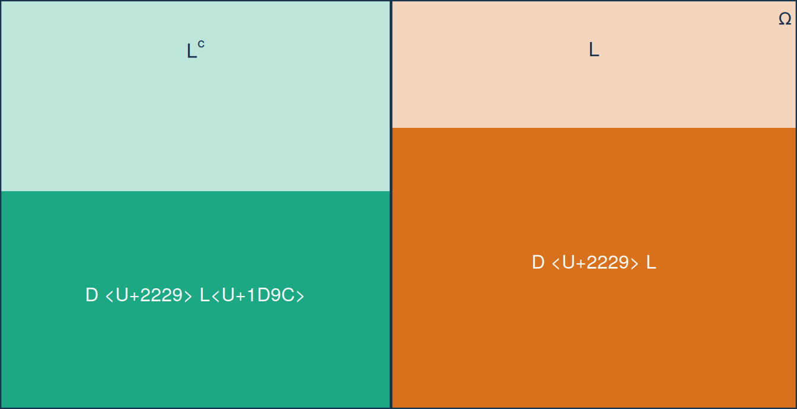
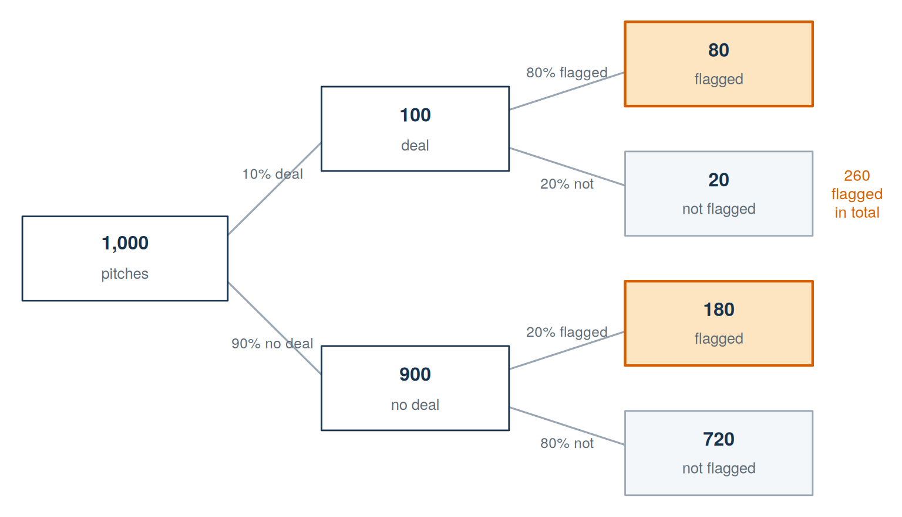
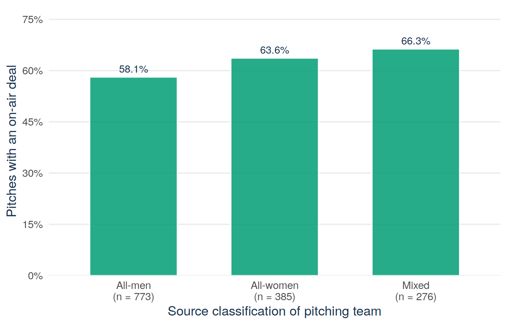

sharks <- read.csv("data/shark_tank_teaching.csv", stringsAsFactors = FALSE)
D <- sharks$deal_on_show == 1 # on-air deal
L <- sharks$season >= 9 # late season: Seasons 9-16
table(deal = D, late = L)Lecture 4: Conditioning, Bayes’ rule, and independence
By the end of Lecture 4, you can
- calculate conditional probabilities from a counts table and identify the reference class behind each one;
- use the multiplication rule to move between joint and conditional probabilities;
- rebuild an overall probability from group-specific rates with the law of total probability;
- update a probability after new evidence with Bayes’ rule, first by counting on a natural-frequency tree and then with the formula;
- check whether two events are independent and explain why disjoint is not the same as independent.
Driving question
An investor who learns a pitch is late-season updates their expectations. A bank seeing a positive fraud flag does the same. Updating chances on new information is the most used probability skill in business — and the easiest to get backwards.
Late-season pitches reach deals more often. What exactly do the two possible “68.8% versus 57.3%” sentences claim, and what does a positive flag from an AI deal-predictor really tell us?
Before class
Total preparation time: about 30 minutes.
Video preparation (15 minutes)
Watch Conditional Probabilities and Bayes’ Rule. Be ready to identify the reference class in a conditional probability and to explain why reversing a condition changes the denominator. All links are also listed in the External Video Guide.
Reactivate (10 minutes). Lecture 2 built the 2×2 counts table for deals and seasons. Rebuild it — the construction of \(D\) and \(L\) is the same as there:
Then compare, in words only:
- “Among pitches in Seasons 9–16, what proportion reached an on-air deal?”
- “Among pitches that reached an on-air deal, what proportion came from Seasons 9–16?”
Both questions will use the same cell of your table. Decide before class which part of the table each question restricts attention to. The lecture opens with exactly this exercise.
Predict (5 minutes). Answer the one-click Mentimeter question posted on Canvas before you come to class: an AI classifier flags pitches likely to get a deal and catches 80% of actual deals. Of the flagged pitches, what share are deals — near 80%, near 50%, or near 30%? Commit to an answer; the lecture resolves it.
If fractions or the conditioning bar are unfamiliar, review Mathematics Refresher: fractions, powers, and event notation.
In class
The session opens with the usual four-minute entry quiz on the prep videos, then turns to the driving question. Two sentences circulate about the same dataset:
- Sentence A. “68.8% of late-season pitches reached an on-air deal.”
- Sentence B. “57.3% of the pitches that reached a deal came from the late seasons.”
Both sentences are built on the same 505 records — the late-season deals. Yet they answer different questions and produce different numbers. By the end of this session you can say precisely what each sentence claims, and you can answer a harder question of the same kind: when an AI classifier flags a pitch as a likely deal, how much should that flag change your mind?
One table, five denominators
Everything starts from the Lecture 2 counts table. The code constructs \(D\) and \(L\) exactly as before — run it yourself:
sharks <- read.csv("data/shark_tank_teaching.csv", stringsAsFactors = FALSE)
D <- sharks$deal_on_show == 1 # on-air deal
L <- sharks$season >= 9 # late season: Seasons 9-16
table(deal = D, late = L) late
deal FALSE TRUE
FALSE 330 229
TRUE 377 505Written with row and column totals:
| Early (\(L^c\), S1–8) | Late (\(L\), S9–16) | Total | |
|---|---|---|---|
| No deal (\(D^c\)) | 330 | 229 | 559 |
| Deal (\(D\)) | 377 | 505 | 882 |
| Total | 707 | 734 | 1441 |
Before any formula, do the class opening exercise: for each probability below, point — physically, on the table — to the count that goes on top and the count that goes underneath.
- \(P(D)\);
- \(P(L)\);
- \(P(D\cap L)\);
- \(P(D\mid L)\);
- \(P(L\mid D)\).
Check your denominators
- \(P(D)\): 882 deal records out of all 1,441 records.
- \(P(L)\): 734 late-season records out of all 1,441 records.
- \(P(D\cap L)\): 505 late-season deal records out of all 1,441 records.
- \(P(D\mid L)\): 505 late-season deal records out of the 734 late-season records.
- \(P(L\mid D)\): 505 late-season deal records out of the 882 deal records.
The first three all divide by 1,441. The last two divide by a part of the table — and that is the whole subject of this lecture.
Conditional probability
MIT explanation (review): 02.2 Conditional Probabilities.
For events \(A\) and \(B\) with \(P(B)>0\), the conditional probability of \(A\) given \(B\) is
\[P(A\mid B)=\frac{P(A\cap B)}{P(B)}.\]
Read the definition as an instruction in three steps: keep only the outcomes inside \(B\), rescale their total probability to 1, and then ask what fraction of that reduced world is also in \(A\). The event after the vertical bar is the reference class — the group you restrict attention to — and it supplies the denominator. For a fixed \(B\), \(P(\cdot\mid B)\) is itself a probability law: it satisfies all three rules from Lecture 2.
Example 5.1 (Worked example: the two rival sentences, resolved) Sentence A asks about \(P(D\mid L)\). Conditioning on \(L\) means covering everything except the Late column:
| Early | Late (\(L\)) | |
|---|---|---|
| No deal | · | 229 |
| Deal | · | 505 |
| Total | · | 734 |
Within that one column, 505 of 734 records are deals:
\[P(D\mid L)=\frac{505}{734}\approx 0.688.\]
Sentence B asks about \(P(L\mid D)\). Conditioning on \(D\) means covering everything except the Deal row:
| Early | Late | Total | |
|---|---|---|---|
| No deal | · | · | · |
| Deal (\(D\)) | 377 | 505 | 882 |
Within that one row, 505 of 882 records are late-season:
\[P(L\mid D)=\frac{505}{882}\approx 0.573.\]
The numerator is 505 in both calculations — the same intersection cell. The denominators, and therefore the questions, differ: Sentence A restricts to the 734 late-season pitches, Sentence B to the 882 deal pitches.
Check: which sentence matches which number?
Sentence A (“of late-season pitches, … reached a deal”) conditions on the season, so it is \(P(D\mid L)=505/734\approx 68.8\%\). Sentence B (“of deal pitches, … came from late seasons”) conditions on the deal, so it is \(P(L\mid D)=505/882\approx 57.3\%\). A report that quotes “68.8% of deal pitches came from late seasons” has attached the right number to the wrong sentence.
Verification in R — subsetting with [L] or [D] is exactly the “restrict the reference class” step:
D <- sharks$deal_on_show == 1
L <- sharks$season >= 9
c(
P_deal_given_late = mean(D[L]),
P_late_given_deal = mean(L[D])
)P_deal_given_late P_late_given_deal
0.6880109 0.5725624 The multiplication rule
MIT explanation (review): 02.6 The Multiplication Rule.
Multiply both sides of the definition by \(P(B)\) and the same content appears in a new role — a way to build a joint probability from a conditional one:
\[P(A\cap B)=P(A\mid B)\,P(B).\]
Reversing the roles of \(A\) and \(B\) must give the same joint probability, because \(A\cap B\) and \(B\cap A\) are the same event:
\[P(A\cap B)=P(A\mid B)\,P(B)=P(B\mid A)\,P(A).\]
This one line is the algebraic reason the two rival sentences can share a numerator while having different denominators: both products equal \(505/1441\), but they factor it through different reference classes.
Try it: verify the joint probability two ways
In class this is the pair task. Use the counts table to check the identity above for \(D\) and \(L\).
Step 1 (given). The direct route: \(P(D\cap L)=505/1441\approx 0.350\).
Step 2 (given). First factorisation: \(P(D\mid L)\,P(L)=\dfrac{505}{734}\cdot\dfrac{734}{1441}\). The 734 cancels — carry out the cancellation and confirm you land on \(505/1441\).
Step 3 (you). Write down the second factorisation, \(P(L\mid D)\,P(D)\), as a product of two fractions from the table, and show that it also collapses to \(505/1441\).
Step 4 (you). Confirm all three routes in R.
Check your answer
\(P(L\mid D)\,P(D)=\dfrac{505}{882}\cdot\dfrac{882}{1441}=\dfrac{505}{1441} \approx 0.350\): the 882 cancels, just as the 734 did.
D <- sharks$deal_on_show == 1
L <- sharks$season >= 9
c(
direct_joint = mean(D & L),
cond_on_late_times_base = mean(D[L]) * mean(L),
cond_on_deal_times_base = mean(L[D]) * mean(D)
) direct_joint cond_on_late_times_base cond_on_deal_times_base
0.3504511 0.3504511 0.3504511 The law of total probability
MIT explanation (review): 02.7 Total Probability Theorem.
Lecture 2 introduced a partition: events that do not overlap and together cover every outcome. Conditioning gives the probability of \(A\) within each part; the multiplication rule turns each conditional probability into a joint piece; and adding the pieces gives the overall probability of \(A\). That chain of three known moves is the law of total probability: for a partition \(B_1,\ldots,B_k\) with every \(P(B_i)>0\),
\[P(A)=\sum_{i=1}^{k}P(A\mid B_i)\,P(B_i).\]
Example 5.2 (Worked example: rebuilding P(D) from the period-specific rates) The early/late events \(\{L^c, L\}\) form a partition, so
\[P(D)=P(D\mid L^c)\,P(L^c)+P(D\mid L)\,P(L) =\frac{377}{707}\cdot\frac{707}{1441} +\frac{505}{734}\cdot\frac{734}{1441} =\frac{377+505}{1441}=\frac{882}{1441}\approx 0.612.\]
Point to the two kinds of number: \(377/707\approx 0.533\) and \(505/734\approx 0.688\) are the period-specific deal rates, and \(707/1441\approx 0.491\) and \(734/1441\approx 0.509\) are the weights — how much of the sample space each period occupies. The overall deal probability is a weighted average of the group rates, so it must lie between 0.533 and 0.688, closer to the rate of the slightly larger group.
D <- sharks$deal_on_show == 1
L <- sharks$season >= 9
c(
direct = mean(D),
from_periods = mean(D[!L]) * mean(!L) + mean(D[L]) * mean(L)
) direct from_periods
0.6120749 0.6120749 Figure 5.1 shows the same computation as areas.
See the R code for this figure
library(ggplot2)
sharks <- read.csv("data/shark_tank_teaching.csv", stringsAsFactors = FALSE)
D <- sharks$deal_on_show == 1
L <- sharks$season >= 9
p_early <- mean(!L)
p_deal_early <- mean(D[!L])
p_deal_late <- mean(D[L])
ggplot() +
# light backgrounds: the two parts of the partition
annotate("rect", xmin = 0, xmax = p_early, ymin = 0, ymax = 1,
fill = "#009E73", alpha = 0.25) +
annotate("rect", xmin = p_early, xmax = 1, ymin = 0, ymax = 1,
fill = "#D55E00", alpha = 0.25) +
# solid areas: deal rate within each part, times the part's width
annotate("rect", xmin = 0, xmax = p_early, ymin = 0,
ymax = p_deal_early, fill = "#009E73", alpha = 0.85) +
annotate("rect", xmin = p_early, xmax = 1, ymin = 0,
ymax = p_deal_late, fill = "#D55E00", alpha = 0.85) +
annotate("segment", x = p_early, xend = p_early, y = 0, yend = 1,
colour = "#17324D", linewidth = 0.8) +
annotate("rect", xmin = 0, xmax = 1, ymin = 0, ymax = 1,
fill = NA, colour = "#17324D", linewidth = 0.8) +
annotate("text", x = p_early / 2, y = 0.28, label = "D ∩ Lᶜ",
colour = "white", size = 4.2) +
annotate("text", x = p_early + (1 - p_early) / 2, y = 0.36,
label = "D ∩ L", colour = "white", size = 4.2) +
annotate("text", x = p_early / 2, y = 0.88, label = "L^c",
parse = TRUE, colour = "#17324D", size = 4.4) +
annotate("text", x = p_early + (1 - p_early) / 2, y = 0.88,
label = "L", colour = "#17324D", size = 4.4) +
annotate("text", x = 0.985, y = 0.955, label = "Omega",
parse = TRUE, colour = "#17324D", size = 3.8) +
coord_cartesian(expand = FALSE) +
theme_void()
Bayes’ rule: count first, formula second
MIT explanation (review): 02.8 Bayes’ Rule.
Return to your prep prediction. An AI classifier reads pitch transcripts and flags the pitches it considers likely to reach a deal. Three numbers describe a (hypothetical) classifier of this kind:
- the base rate: 10% of pitches in its target population reach a deal;
- the sensitivity: among actual deals, 80% get flagged, \(P(\text{flag}\mid\text{deal})=0.80\);
- the false-positive rate: among non-deals, 20% still get flagged, \(P(\text{flag}\mid\text{no deal})=0.20\).
A pitch has just been flagged. How likely is a deal now — near 80%, 50%, or 30%? Before any formula, count.
Example 5.3 (Worked example: 1,000 imaginary pitches) Imagine 1,000 pitches from this population and push them through the three numbers, as in Figure 5.2.
- Split by the base rate. Of 1,000 pitches, 100 are deals and 900 are not.
- Flag the deals. Sensitivity 80%: of the 100 deals, 80 are flagged.
- Flag some non-deals too. False-positive rate 20%: of the 900 non-deals, 180 are flagged.
- Collect the flagged. In total \(80+180=260\) pitches carry a flag — and only 80 of them are deals:
\[P(\text{deal}\mid\text{flag})=\frac{80}{260}\approx 0.31.\]
The classifier catches 80% of deals, yet fewer than a third of its flags are deals. The reason is visible in the tree: the 900 non-deals are such a large group that even a modest 20% false-positive rate produces 180 false flags — more than double the 80 true ones. A flag moves the deal probability from 10% to 31%: real evidence, but nowhere near certainty.
See the drawing code (optional, not exam material)
old_par <- par(no.readonly = TRUE)
par(mar = c(0.2, 0.2, 0.2, 0.2))
plot(NA, xlim = c(0, 10), ylim = c(0.3, 9.7), axes = FALSE,
xlab = "", ylab = "", xaxs = "i", yaxs = "i")
draw_node <- function(x, y, top, bottom, fill = "white",
border = "#17324D", lwd = 1.4, w = 1.05, h = 0.78) {
rect(x - w, y - h, x + w, y + h, col = fill, border = border, lwd = lwd)
text(x, y + 0.26, top, font = 2, cex = 1.0, col = "#17324D")
text(x, y - 0.30, bottom, cex = 0.8, col = "#5B6976")
}
draw_branch <- function(x1, y1, x2, y2, label, above = TRUE) {
segments(x1, y1, x2, y2, col = "#9AA7B2", lwd = 1.6)
text((x1 + x2) / 2, (y1 + y2) / 2 + if (above) 0.32 else -0.32,
label, cex = 0.76, col = "#5B6976")
}
# branches first, then boxes on top
draw_branch(2.45, 5.35, 3.55, 7.15, "10% deal")
draw_branch(2.45, 4.65, 3.55, 2.85, "90% no deal", above = FALSE)
draw_branch(5.65, 7.75, 6.95, 8.45, "80% flagged")
draw_branch(5.65, 7.05, 6.95, 6.35, "20% not", above = FALSE)
draw_branch(5.65, 2.95, 6.95, 3.65, "20% flagged")
draw_branch(5.65, 2.25, 6.95, 1.55, "80% not", above = FALSE)
draw_node(1.35, 5.0, "1,000", "pitches", w = 1.15)
draw_node(4.6, 7.4, "100", "deal")
draw_node(4.6, 2.6, "900", "no deal")
draw_node(8.0, 8.6, "80", "flagged", fill = "#FDE5C1",
border = "#D55E00", lwd = 2.2)
draw_node(8.0, 6.2, "20", "not flagged", fill = "#F4F7F9",
border = "#9AA7B2")
draw_node(8.0, 3.8, "180", "flagged", fill = "#FDE5C1",
border = "#D55E00", lwd = 2.2)
draw_node(8.0, 1.4, "720", "not flagged", fill = "#F4F7F9",
border = "#9AA7B2")
text(9.55, 6.2, "260\nflagged\nin total", cex = 0.82, col = "#D55E00")
par(old_par)
Now the formula. The question reverses a condition: the classifier’s quality is stated as \(P(\text{flag}\mid\text{deal})\), but the decision-maker needs \(P(\text{deal}\mid\text{flag})\). The multiplication rule gives the numerator and total probability gives the denominator:
\[P(B_i\mid A)=\frac{P(A\mid B_i)\,P(B_i)} {\sum_j P(A\mid B_j)\,P(B_j)}.\]
This is Bayes’ rule. For the classifier, with the deal/no-deal partition:
\[P(\text{deal}\mid\text{flag}) =\frac{0.80\times 0.10}{0.80\times 0.10+0.20\times 0.90} =\frac{0.08}{0.08+0.18}=\frac{0.08}{0.26}\approx 0.308.\]
Every term is a branch of the tree, divided by 1,000:
| Formula term | Value | Tree count |
|---|---|---|
| \(P(\text{flag}\mid\text{deal})\,P(\text{deal})\) | \(0.08\) | the 80 flagged deals |
| \(P(\text{flag}\mid\text{no deal})\,P(\text{no deal})\) | \(0.18\) | the 180 flagged non-deals |
| the denominator (total probability of a flag) | \(0.26\) | all 260 flagged pitches |
The formula is the tree, written compactly. When a Bayes question appears on the exam, you may draw the tree with a convenient imaginary total and count — the two routes always agree.
Bayes’ rule also works on the Shark Tank events themselves. Reversing \(P(D\mid L)\) recovers \(P(L\mid D)\), and the R check makes the point that nothing beyond the multiplication rule and total probability is involved:
D <- sharks$deal_on_show == 1
L <- sharks$season >= 9
bayes_late_given_deal <- mean(D[L]) * mean(L) / mean(D)
c(
from_bayes = bayes_late_given_deal,
from_table = mean(L[D])
)from_bayes from_table
0.5725624 0.5725624 Independence of events
MIT explanation (review): 03.3 Independence of Two Events.
Conditioning finally makes precise an idea Lecture 2 could only promise: what it means for one event to carry no information about another. Events \(A\) and \(B\) (with \(P(B)>0\)) are independent when learning that \(B\) occurred does not change the probability of \(A\):
\[P(A\mid B)=P(A).\]
Multiplying both sides by \(P(B)\) gives the symmetric product form, which also covers zero-probability events and is the usual textbook definition:
\[P(A\cap B)=P(A)\,P(B).\]
Example 5.4 (Worked example: are D and L independent?) Check either form with the real numbers.
Via conditioning: \(P(D\mid L)=505/734\approx 0.688\), while \(P(D)=882/1441\approx 0.612\). Learning that a pitch is late-season raises the deal probability, so \(D\) and \(L\) are not independent.
Via the product: \(P(D\cap L)=505/1441\approx 0.350\), while \(P(D)\,P(L)=\dfrac{882}{1441}\cdot\dfrac{734}{1441}\approx 0.612\times 0.509\approx 0.312\). The joint probability exceeds the product, which says the same thing: deals and late seasons occur together more often than independence would predict.
D <- sharks$deal_on_show == 1
L <- sharks$season >= 9
c(
P_D_given_L = mean(D[L]),
P_D = mean(D),
P_D_and_L = mean(D & L),
P_D_times_P_L = mean(D) * mean(L)
) P_D_given_L P_D P_D_and_L P_D_times_P_L
0.6880109 0.6120749 0.3504511 0.3117717 Disjoint is not independent — one minute, one example. Take the early/late pair \(L^c\) and \(L\). They are disjoint: no pitch is in both periods, so \(P(L^c\cap L)=0\). But the product \(P(L^c)\,P(L)\approx 0.491\times 0.509\approx 0.25\) is far from zero, so they fail the independence check spectacularly. Disjoint events with positive probability are always dependent: observing one tells you the other is impossible — maximal information, not none.
Second application: deal rates by team composition
The dataset classifies pitching teams as all_men, all_women, mixed, or unknown. Each within-category deal rate is a conditional probability: \(P(D\mid \text{category})\), with the category as reference class. The construction is shown in full — this is the live-R segment of the session:
sharks <- read.csv("data/shark_tank_teaching.csv", stringsAsFactors = FALSE)
D <- sharks$deal_on_show == 1
known_gender <- sharks$pitcher_gender_group != "unknown"
gender_labels <- c("all_men", "all_women", "mixed")
gender_deal_rates <- tapply(
sharks$deal_on_show[known_gender],
factor(sharks$pitcher_gender_group[known_gender], levels = gender_labels),
mean
)
gender_deal_rates all_men all_women mixed
0.5808538 0.6363636 0.6630435 See the R code for this figure
library(ggplot2)
sharks <- read.csv("data/shark_tank_teaching.csv", stringsAsFactors = FALSE)
known_gender <- sharks$pitcher_gender_group != "unknown"
gender_labels <- c("all_men", "all_women", "mixed")
gender_deal_rates <- tapply(
sharks$deal_on_show[known_gender],
factor(sharks$pitcher_gender_group[known_gender], levels = gender_labels),
mean
)
gender_counts <- table(
factor(sharks$pitcher_gender_group[known_gender], levels = gender_labels)
)
rates_df <- data.frame(
team = paste0(c("All-men", "All-women", "Mixed"),
"\n(n = ", as.integer(gender_counts), ")"),
deal_rate = as.numeric(gender_deal_rates)
)
rates_df$team <- factor(rates_df$team, levels = rates_df$team)
ggplot(rates_df, aes(x = team, y = deal_rate)) +
geom_col(fill = "#009E73", alpha = 0.85, colour = "white",
width = 0.62) +
geom_text(aes(label = paste0(round(100 * deal_rate, 1), "%")),
vjust = -0.6, colour = "#17324D", size = 3.6) +
scale_y_continuous(limits = c(0, 0.75),
breaks = seq(0, 0.75, by = 0.15),
labels = paste0(seq(0, 75, by = 15), "%"),
expand = expansion(mult = c(0, 0.05))) +
labs(x = "Source classification of pitching team",
y = "Pitches with an on-air deal") +
theme_minimal(base_size = 13) +
theme(
panel.grid.minor = element_blank(),
panel.grid.major.x = element_blank(),
plot.caption = element_text(colour = "#5B6976"),
axis.title = element_text(colour = "#17324D")
)
Read Figure 5.3 as three conditional proportions, each with its own denominator: the 63.6% bar means that 63.6% of the 385 all-women pitch records reached an on-air deal. The bars use three different reference classes, which is exactly why they can be compared — each is rescaled within its own group.
What a conditional probability can and cannot say
Reversing the condition does not reverse cause. Bayes’ rule converts \(P(A\mid B)\) into \(P(B\mid A)\) — an accounting identity about reference classes. It says nothing about which event influences which: \(P(D\mid L) > P(D)\) does not mean late broadcasting causes deals, and a flagged pitch is not made more deal-worthy by the flag.
These are selected televised records. Every conditional proportion in this lecture describes pitches that producers selected for broadcast. The team-composition comparison uses the source’s presenter classification (not every company member, and seven records are unclassified) and does not isolate a causal effect of team composition. The classifier example uses stated hypothetical rates, not rates estimated from these data. And, as always, an on-air deal is not a completed investment.
Answering the driving question
The two sentences claim different things about the same 505 records: “68.8% of late-season pitches reached a deal” is \(P(D\mid L)=505/734\), with the late seasons as reference class; “57.3% of deal pitches came from late seasons” is \(P(L\mid D)=505/882\), with the deals as reference class. Both are correct; swapping their numbers is the classic conditioning error. And a positive flag from the AI deal-predictor tells us less than its 80% sensitivity suggests: with a 10% base rate and a 20% false-positive rate, only \(80/260\approx 31\%\) of flagged pitches are deals — the flag lifts the probability from 10% to 31%, no further.
Next: We can now update the chance of one event when another is known. The natural next step is to watch two numerical measurements at the same time — deals and seasons, seasons and equity asks — because business questions are usually about relationships, not single variables. Lecture 5 introduces the joint distribution of a pair of random variables and the first summaries of co-movement, covariance and correlation, together with what a correlation number does and does not license us to say.
After class
Total practice time: about 60 minutes.
Retrieval (10 minutes)
- What is the denominator of \(P(A\mid B)\)?
- Why is \(P(A\mid B)\) generally different from \(P(B\mid A)\)?
- What makes a collection of events a partition?
- What does the denominator in Bayes’ rule calculate?
- State the two equivalent definitions of independence of events.
- Can two disjoint events, each with positive probability, be independent?
Check your answers
- \(P(B)\), the probability of the conditioning event.
- They condition on different reference classes and therefore have different denominators.
- The parts are mutually disjoint and their union is \(\Omega\).
- The total probability of the observed evidence, added across all parts of the partition.
- \(P(A\mid B)=P(A)\) (learning \(B\) does not change the probability of \(A\)), and the product form \(P(A\cap B)=P(A)\,P(B)\).
- No. Their intersection has probability 0 while the product of their probabilities is positive, so the product check fails. Observing one makes the other impossible.
From worked to faded: the Bayes tree (15 minutes)
Re-read the worked count tree (Example 5.3). Then rebuild it with new numbers: base rate 20%, sensitivity 90%, false-positive rate 30%.
Step 1 (given). Start with 1,000 imaginary pitches: 200 deals, 800 non-deals.
Step 2 (you). Fill in the four leaves: flagged and unflagged counts in each branch.
Step 3 (you). Collect the flagged pitches and compute \(P(\text{deal}\mid\text{flag})\).
Check your answer
Of the 200 deals, 90% are flagged: 180. Of the 800 non-deals, 30% are flagged: 240. Flagged total \(180+240=420\), of which 180 are deals: \(P(\text{deal}\mid\text{flag})=180/420\approx 0.429\). The formula agrees: \(\dfrac{0.90\times 0.20}{0.90\times 0.20+0.30\times 0.80} =\dfrac{0.18}{0.42}\approx 0.429\).
Unassisted. A stricter classifier operates on a population where 5% of pitches reach a deal; its sensitivity is 90% and its false-positive rate is 10%. What share of flagged pitches are deals? Use either the tree or the formula.
Check your answer
With 1,000 pitches: 50 deals of which 45 flagged; 950 non-deals of which 95 flagged. \(P(\text{deal}\mid\text{flag})=45/(45+95)=45/140\approx 0.321\). Even with 90% sensitivity and a low false-positive rate, the 5% base rate keeps the share of true flags below one third.
Practice (15 minutes)
Use the counts table: 330, 229, 377, 505, with totals 559, 882, 707, 734, and 1,441.
- Use the early/late partition to verify \(P(D)=P(D\mid L^c)\,P(L^c)+P(D\mid L)\,P(L)\).
- Calculate and interpret \(P(L\mid D)\). Explain why it differs from \(P(D\mid L)\).
- Decide by calculation whether \(D\) and \(L\) are independent, using the product form.
- The events \(L^c\) and \(L\) are disjoint. Are they independent? Explain in one sentence.
- Among the 1,434 pitches with a known team-composition classification, 428 of 661 pitches with women represented (all-women or mixed) and 449 of 773 all-men pitches reached an on-air deal. Calculate both conditional deal proportions and interpret the difference.
Check your answers
- \((377/707)(707/1441)+(505/734)(734/1441)=(377+505)/1441=882/1441 \approx 0.612\).
- \(P(L\mid D)=505/882\approx 0.573\): among deal records, 57.3% came from Seasons 9–16. It differs from \(P(D\mid L)=505/734\approx 0.688\) because the conditioning event — and therefore the denominator — is different.
- \(P(D\cap L)=505/1441\approx 0.350\), while \(P(D)\,P(L)=(882/1441)(734/1441)\approx 0.312\). The two are not equal, so \(D\) and \(L\) are not independent.
- No: \(P(L^c\cap L)=0\) but \(P(L^c)\,P(L)\approx 0.25>0\), so the product check fails — disjoint events with positive probability are always dependent.
- \(428/661\approx 0.648\) and \(449/773\approx 0.581\), a descriptive difference of about 6.7 percentage points. The comparison uses the source’s presenter classification and selected televised pitches; it does not establish a causal effect of team composition.
Spaced review: one item from Lecture 3 (5 minutes)
A variable \(Y\) has PMF \(p_Y(0)=0.2\), \(p_Y(1)=0.5\), and \(p_Y(2)=0.3\). Calculate \(E[Y]\) and say in one sentence what the number means, given that \(Y\) can never equal it exactly… or can it?
Check your answer
\(E[Y]=0(0.2)+1(0.5)+2(0.3)=1.1\). It is the probability-weighted average of the possible values — the long-run average over many repetitions — and it need not be a value the variable can take: here \(Y\) is never 1.1.
Worked exam interpretation (10 minutes)
Question. A student sees \(P(D\mid L)=0.688\) and writes, “68.8% of deal pitches came from late seasons.”
Check a model answer
The calculation conditions on \(L\), so the denominator is the 734 pitches in Seasons 9–16. The correct interpretation is that 68.8% of late-season records reached an on-air deal. The sentence the student wrote describes the reverse conditional, \(P(L\mid D)=505/882\approx 57.3\%\). Neither quantity measures completed investment or a causal season effect.
Make it yours (5 minutes)
Utility: two sentences
Think of your EiA venture — or any business you know well. Name one signal it receives about customers or partners (a positive review, a signed letter of intent, a click on an ad) and write two sentences: first state the conditional probability the signal makes you want to know, in \(P(\cdot\mid\cdot)\) form with the reference class named; then say what base rate you would need before trusting the signal, Bayes-style. There is no wrong answer; the point is connecting today’s tools to something you care about.
See an example, then write your own
Take a student-run campus meal-prep box venture. “I want \(P(\text{becomes a paying customer} \mid \text{clicked the ad})\), where the reference class is all students shown the ad this month. Before trusting a high click count I would need the base rate of buyers among all viewers — with a tiny base rate, most clickers still never buy, exactly the count-tree logic.”
You can discuss this task — and any other task in this chapter — with Tilly, the course AI assistant on Canvas: ask it to build the natural-frequency tree for your signal with numbers you consider realistic.
Continue to Lecture 5: Joint random variables, covariance, and correlation.
Formula sheet: Lecture 4 formulas.
For a more formal explanation, consult Nieuwenhuis, Statistical Methods for Business and Economics, Chapters 7–8.